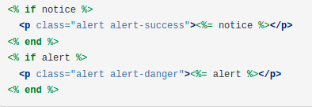

CONTENTS
Tutorial
How to setup devise in rails 6?
Introduction
Devise is a flexible authentication solution for Rails based on Warden. It is Rack based. It is a complete MVC solution based on Rails engines. It allows you to have multiple models signed in at the same time. It is based on a modularity concept: use only what you really need.
Devise support both Mongoid and ActiveRecord, we rely on this variable to run specific code for each ORM.
The default value of DEVISE_ORM is active_record.
In this tutorial you will learn how to setup devise with gem and you will be able to
make model, and controller, views of signup, login and other with is given by devise.
Prerequisites
To follow this tutorial you will need:
- First of all you need to install ruby on your machine
-
after installation ruby you need to to install rails and create new project with
postgresql database by this command:
raqils new appname -d postgresql
Setting up Devise for rails
-
Add Devise gem
open your gemfile and add this line.gem 'devise'
And run command in your terminalbundle install
Configure Devise
-
Open up config/environments/development.rb and add this line:
config.action_mailer.default_url_options = { host: 'localhost', port: 3000 }
-
Open up app/views/layouts/application.html.erb and add

right above<%= yield %>
Setup user model
-
We’ll use a bundled generator script to create the User model.
Run below command to generate user model of deviserails g devise user
After generating model Run below Command for to migrate table in databaserails db:migrate
-
Create your first User
Now that you have set everything up you can create your first user. Devise creates all the code and routes required to create accounts, log in, log out and signup, etc. -
Make sure your rails server is running,
open
http://localhost:3000/users/sign_up and create your user account.
Add Sign up and login link
-
All we need to do now is to add appropriate links or notice about the user being loggedin
In the view place below code where you want to keep your login, logout or signup button.
In order to do that, edit app/views/layouts/application.html.erb add:<% if user_signed_in? %>
Logged in as <strong><%= current_user.email %></strong>
<%= link_to "Logout", destroy_user_session_path, method: :delete %>
<% else %>
<%= link_to "Sign up", new_user_registration_path %>
<%= link_to "Login", new_user_session_path, :class => 'navbar-link' %>
<% end %> -
Finally, force the user to redirect to the login page if the user was not logged in. Open up app/controllers/application_controller.rb and add or add in any other controller which is you want to authorize after login:
before_action :authenticate_user!
afterclass ApplicationController < ActionController::Base
- Open your browser and try logging in and logout and sign up in your application.
Basic commnand
- To verify if a user is signed in, use the following helper:
user_signed_in?
- For the current signed-in user, this helper is available:
current_user
- You can access the session for this scope:
user_session
- Notice that if your Devise model is called Member instead of User, for example, then the helpers available are:
before_action :authenticate_member!
member_signed_in?
current_member
member_session
Configure Views
- Since Devise is an engine, all its views are packaged inside the gem. These views will help you get started, but after some time you may want to change them. If this is the case, you just need to invoke the following generator, and it will copy all views to your application:
$ rails generate devise:views
Configure Controller
-
If the customization at the views level is not enough, you can customize each controller by following these steps:
-
Create your custom controllers using the generator which requires a scope:
$ rails generate devise:controllers [scope]
-
Tell the router to use this controller:
devise_for :users, controllers: { sessions: 'users/sessions' }
- Copy the views from devise/sessions to users/sessions. Since the controller was changed, it won't use the default views located in devise/sessions
- Finally, change or extend the desired controller actions or override functionality whatever you want.
-
Create your custom controllers using the generator which requires a scope:

Muhammad Saad Siddique
Muhammad Saad ruby on rails developer. Recently joining as a ruby on rails developer in techcreatix software house in lahore